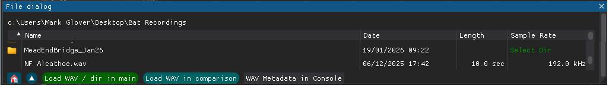
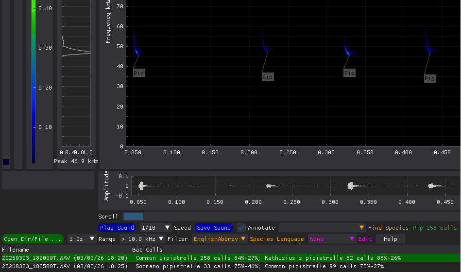

Bat Detect GUI
Use
Load a single wav file
- Drag the file onto ‘Bat Detect GUI’ window
- Or press ‘Open Dir/File…’
- Add top level folders that contain bat recordings (these are remembered)
- Select file (via single click) and press ‘Load WAV / Dir in main’
The wav file will be classified for bat echolocation call,
this will be displayed as annotations on the spectrograph in the selected species language and are retained in the ‘ann’ subdirectory.

Load a directory of wav files
- Drag the directory onto ‘Bat Detect GUI’ window
- Or press ‘Open Dir/File…’
- Add top level folders that contain bat recordings (these are remembered and a Classify.bat file is created, see below)P
- Press ‘Select Dir’ button at end of directory line and press ‘Load WAV / Dir in main’.

- Or in Windows File Explorer drag directory into 'Classify.bat' file.
This is quicker as it does not need to display GUI. The 'Classify.bat' file can be copied to be nearer the directory, and is created in all added top level folders.
- Or in Linux terminal type ./classify.sh and drag the folder in to provide the path.
All the wav files will be classified for bat echolocation calls (this may take some time) and are retained in the ‘ann’ subdirectory.
Wakepy should stop the PC sleeping while the files are classified
The files will be listed in a table at the bottom of the GUI. It will scroll to the first consecutive calls.
Display coordinates on any graph
- Click on graph
- The time, frequency or power values will display in the bottom right hand corner of the spectrogram

Display frequency of maximum energy
- This is shown at the bottom of the power spectrogram
- Zoom in on call(s) to get a more accurate values
- Filtering out strong noise with the ‘Filter’ combo-box will help.
Zoom in on spectrogram area
- Normal left click and drag to define area to be zoomed. Double click to unzoom
- Or use scroll wheel on mouse
- Or alter the ‘Range’ combo-box, this will be retained
The amplitude and power graphs will alter to also display the zoomed area.
Play Bat Call Sound
- Select ‘Speed’ combo-box,
- Press ‘Play Sound’ button
Some sounds are easier to recognise as sounds than spectrograms. Bat sounds are normally played at 1/10 speed to be audible.
When this button is pressed a vertical cursor will show the sound being played on the spectrogram.
The default sound replay on spectrogram movement does not show a cursor for reliability.
Crickets may be better at 1/2 or very high frequency bats at 1/20 speed.
Alter area in spectrogram
- Left and right arrow keys move spectrogram window one windows worth in time
- Or click on scroll bar
- Up and down arrow keys move spectrogram one file
- Or click on table row
- ‘Range’ combo-box alters size of spectrogram window
- ‘Filter’ combo-box filters displayed graphs and played sound.
This can removed audible noise, but may hide the fact that a bat call is in fact an audible noise harmonic.

The new area will have its time expanded sound play automatically, this will stop short if the spectrogram area is changed.
Save Bat Call Sound
- Select ‘Speed’ combo-box,
- Press ‘Save Sound’ button
Saves only the displayed sound, file-name based on originating file and in the same directory.
Time expanded recordings names end with 'TE.wav'
Save current settings
- If you exit by closing the GUI the current settings will be retained
- If you exit by closing the console the current settings will not be retained.
Mobile Echo Meter Touch Use
- Save one or more Echo Meter sessions in a separate directory (from Android Documents>EchoMeter>Recordings)
- Drag the directory onto ‘Bat Detect GUI’ window
- Go into the directory and press ‘
Load WAV / Dir in main’.
A table of the all session contents will be displayed with an Echo Meter and a BatDetect2 classification per WAV file
- Check recording classification for most notable species in file, ‘Assign species’ to any incorrect
- Press ‘Save Map’ to generate HTML map of species locations with hyper-links to time expanded files
Expert Use
Display time interval on Spectrograph
- Click on start,
- Click on end
- A horizontal annotation will display ending in the time in milliseconds

Manually compare calls with reference material
- Press a key while drag and dropping reference file onto GUI window
- Or use ‘Open Dir/File..’ select reference file and press ‘Load comparison WAV’
Two spectrograms will be displayed.
You can play or zoom in or measure on either window.
The arrow keys will work with the ‘Active Display’ press the ‘Press to activate’ button to change the active display.
Alter colour thresholds in spectrogram
- Drag blue slider to alter min level (black to blue threshold)
- Drag red slider to alter max level (all above is red)
This can result in weak signals becoming clearer.
The min is automatically adjusted when the spectrogram moves.
Change or add classification of a call
- Select 'Source' in the ‘Edit’ combo-box,
- Select species in ‘Assign Species’ combo-box,
- Select type in ‘Call Type’ combo-box,

- Right click drag to select area of call. Unfortunately you will not get the same feedback as when zooming.
The annotation should be added and any included calls deleted. >
The new classification will be retained in the ‘ann’ directory.
Display of wav file metadata
- Select file in ‘Open Dir/File …’ dialogue.
- Press ‘WAV Metadata in console’ button
Meta data is manufacturer / firmware version dependant, so just displaying as text.
DearPyGui popup windows are very performance sensitive, so displaying in console.
Problems
User errors or warnings
- The status line at the bottom the GUI is used to display any problems detected in red and will usually be announced by a howl sound.
- The console window will contain any debugging output including any exceptions. This also displays the extra meta data in audio moth wav files.
Classifier
-
The BatDetect2 classifier used only knows UK echolocations calls, so social calls, feeding buzzes and some noise will be misidentified or missed.
-
Reported Noctules are quite often harmonics of audible noise, so may need to reduce low pass filter to check this.
However audible noise is often loader than higher frequencies so needs to be low pass filtered to give useful power spectrum.
-
Rare species reported are often common species with slightly unusual frequencies.
Recordings
- Distant or cluttered calls often miss upper, occasionally lower frequencies. and merge with echo’s,
- Calls that are too strong for the gain setting can cause aliasing of higher frequencies (this looks likes a rectangle on the ‘Amplitude’ graph).
Strong calls are best for ID, so keep recorder gain down to see these, at the expense of not seeing more distant calls.
Graphical User Interface (GUI)
- The GUI is DearPyGui, created mainly for gaming it is very fast, but refreshes the display continuously when nothing has changed.
- If the GUI has any unchecked problems it will crash later in its c++ main loop, making debugging very difficult.
Laptops
- Laptops often have higher density displays than humans can read
- Apps compensate for this by making the text and everyting larger
- DearPyGui does not initialy do this, it has only one font/size, and does not space correctly for custom fonts
- Next time the app runs DearPyGui gets the size right and I stop using a default custom font.
Spectrograms
- Use DearPyGui Heat-maps for display, which defaults to showing the value of each square - resulting in a white screen consisting of dense text.
Only zooming and annotation show above the heat-map, so everything else is invisible.
Hence the heatmap itself crudely used for the selection rectangle and annotation is used for the audio replay cursor and intervals.
- Use PyTorch for processing, which is fast but is sensitive to the sampling rate, BatDetect2 does not use PyTorch for this (though it is used for machine learning).